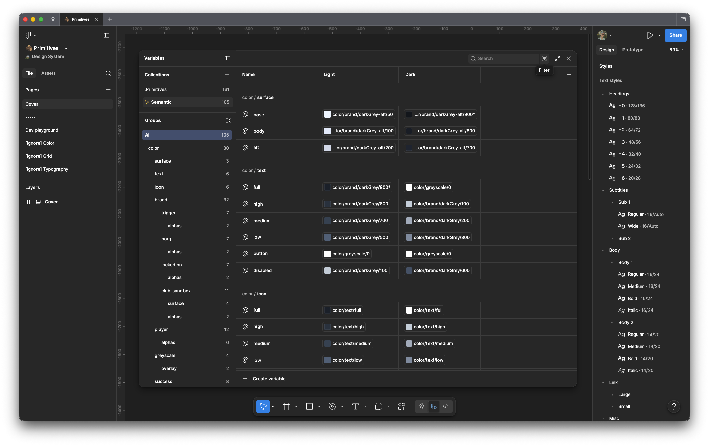
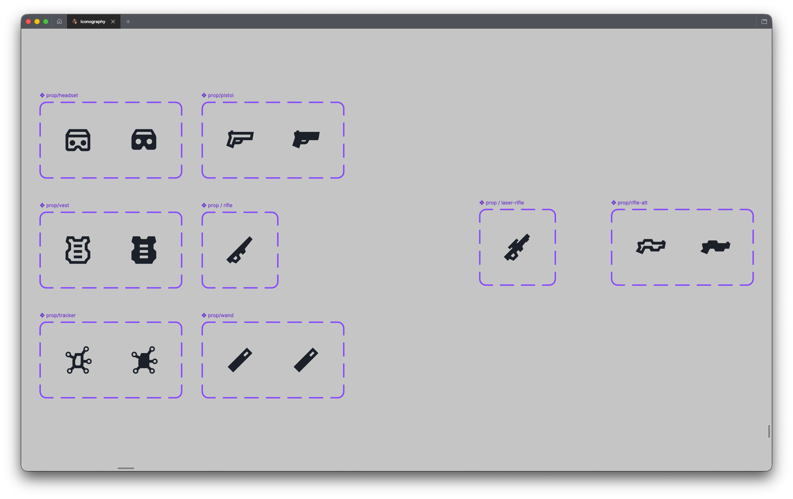
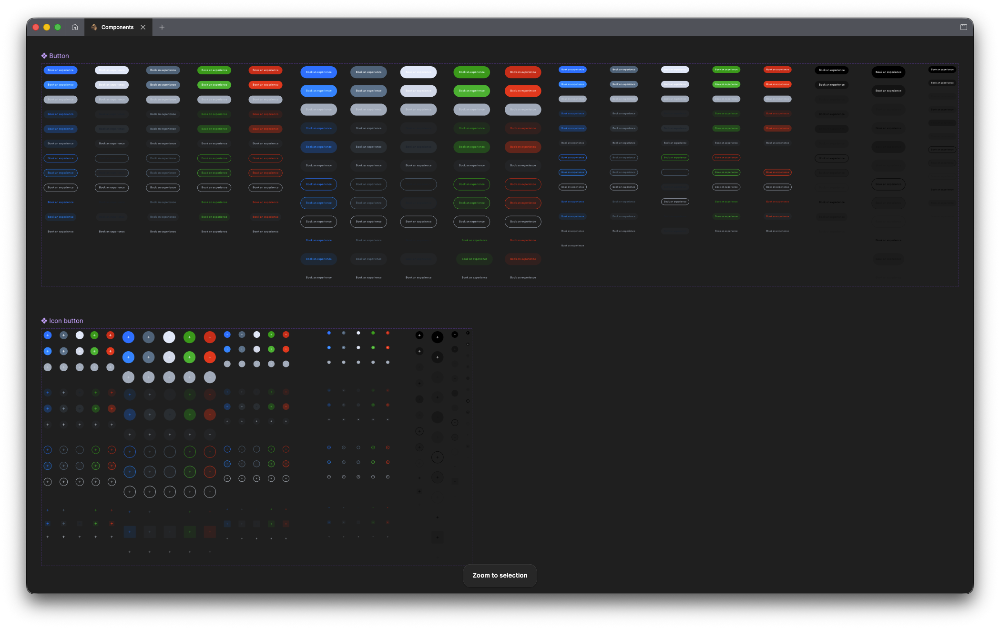
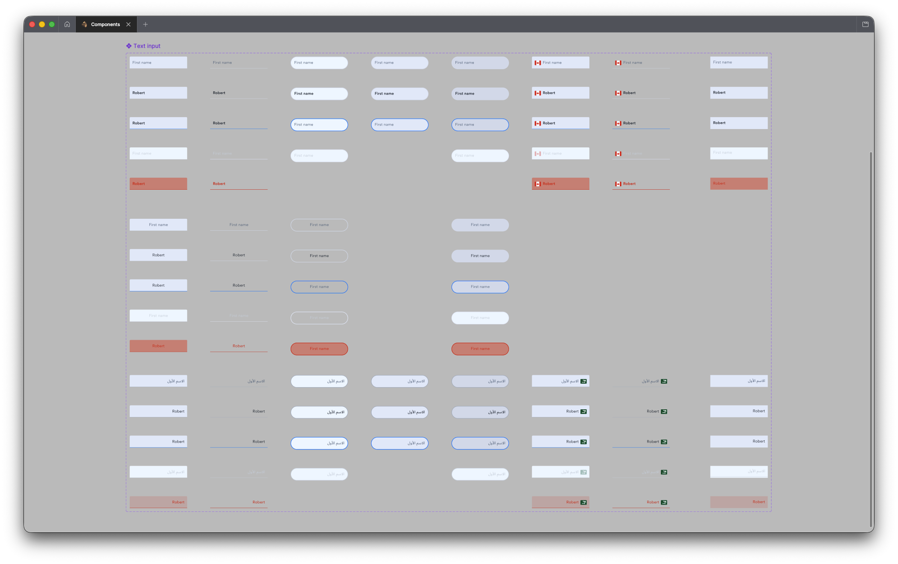
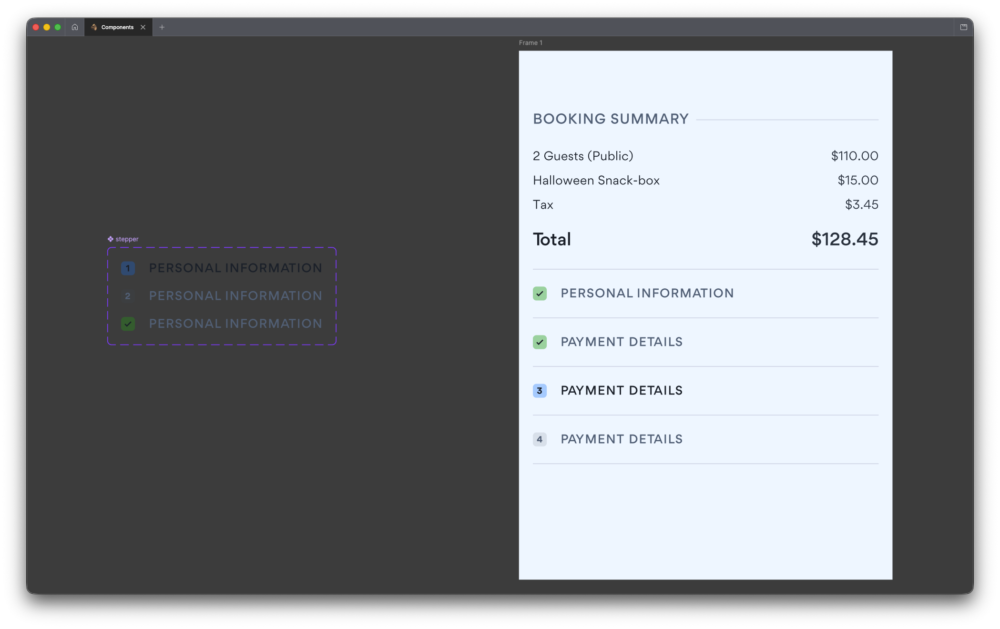

The Sandbox VR Design System
How I went from a four-colour brand doc to a design system that runs across every Sandbox VR product.
Context
When I joined Sandbox VR in July 2023, the design foundation was a few screenshots from a flashy presentation they recieved as part of their initial branding. Four brand hex colours, some glamour shots of a concept store and a few photos of people posing with foam VR goggles on. That was the starting line.
Developers were hardcoding everything. Every button, every text input, all built from scratch, every single time, often slightly differently as the tech debt mounted over years of not having a single source of truth. Very little was reusable. Nothing was consistent.
The problem
Over the years of "scrappy startup" building, the tech debt from inconsistent was huge. Often the approach was a "sack it off, just make it again" instead of trying to pick apart what was already there. The UI system had to work across two very different environments. There's the digital product: booking flows, experience pages, marketing campaign pages, account stuff, and then there's the physical in-store world — signage, hardware interfaces, in-venue UX. Both needed to feel like the same thing and were, when I joined, hugely disjointed
The star
- Devs rebuilding UI from scratch on every ticket
- Type, colour, and spacing all over the place
- No handoff process — visual decisions lived in people's heads and were vibes-based
- Each new project or partnership with companies such as Netflix meant starting from the beginning every time
Start with the foundations

Colour tokens and typography scale across light and dark modes
I started with primitives as I wanted to build this atomically. Enter raw values on an atomic level, then point semantic tokens towards these raw values.
At the primitive level, tokens used code-style naming that would slot better into a "set it and forget it", i.e. blue/700, darkGrey-alt/50 etc.
The semantic level that sat above that and makes things human-readable — color/surface/base, color/text/high, color/icon/full referenced back to these initial values. Designers and devs talked in semantics, not the other way round. This second layer meant that if a value changes — new theme, dark mode update, everyone discovers that the colour blue is actually horrible — you change it once, at the primitive level, and it cascaded through everything.
Typography got a full overhaul too. When I joined, type was a mess — forced bold here, italic there, very little logic as to what it actually should be. Replaced it with a proper scale, H1 down through titles, subheads, body and utility styles.
Iconography

Custom prop iconography — headset, pistol, vest, rifle, tracker, wand
I drew a set of custom icons for Sandbox VR's physical props — headsets, vests, trackers, wands — then used Google Material to backfill the utility stuff. Arrows, chevrons, add/remove, that kind of thing. Custom where it matters, sourced where it didn't as much.
The main reason behind this was an easy switch out to a library of icons that were well designed, consistently updated and easy to implement.
Components

Full button component library — all states, sizes, and colour variants
Once the foundations were solid, I tackled the high-traffic stuff first. Buttons, text fields, nav, footers. All designed with at least AA WCAG accessibility in mind.
The goal was building a Lego kit — grab what you need, build, ship. If it didn't exist and engineers needed it, we collaborated to make sure that whatever we brought into the design system was consistent with everything else and fit for purpose.

Text inputs across all states — including RTL Arabic variants for global markets
The system was built for global use from the start. Text inputs also included full RTL Arabic support for stores opening in the Middle East. Not built as an afterthought but baked in from the beginning.

An example component – Stepper
How it's maintained
I didn't build it and call it done. This was a living, breathing document that needed nudging and tweaking as time went on.
Primitives were pretty much set-and-forget — the bedrock didn't shift all that much. The component and iconography libraries however were kept live, with weekly dev syncs to make sure both sides stay in step together when something changes.
Design trends were considered, not always chased. The point of the system wasn't to bend to every aesthetic shift — but it does respond when something genuinely changes in how users expect things to work.
The proof
150+ product team tickets were shipped with design system components alongside countless dev and marketing tickets. Across the business it was mass-adopted, both into online and in-store touchpoints by engineering, marketing and store teams.
When we launched our collaboration with Netflix House, an admin panel needed to be span up to manage the sessions in the Philadelphia location and go live with the classic start-up deadline of 'immediately'.
I'm incredibly proud of the fact that engineers were able to pull straight from the system, using pre-established patterns and components to build, implement and ship it incredibly quickly with little input needed from my side apart from a "Looks good to me."
That's the whole point: build the tool well enough that it works without you in the room.